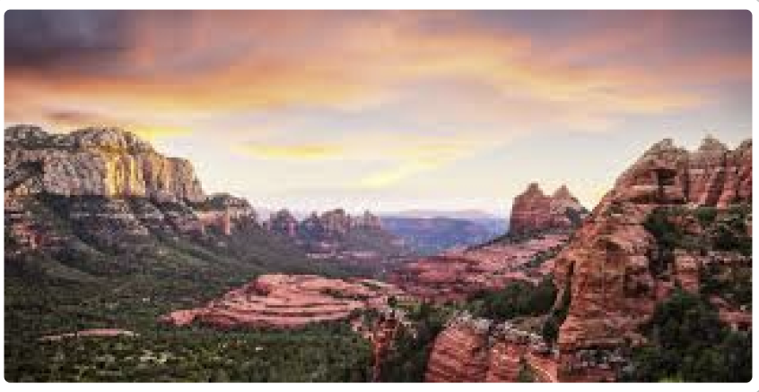
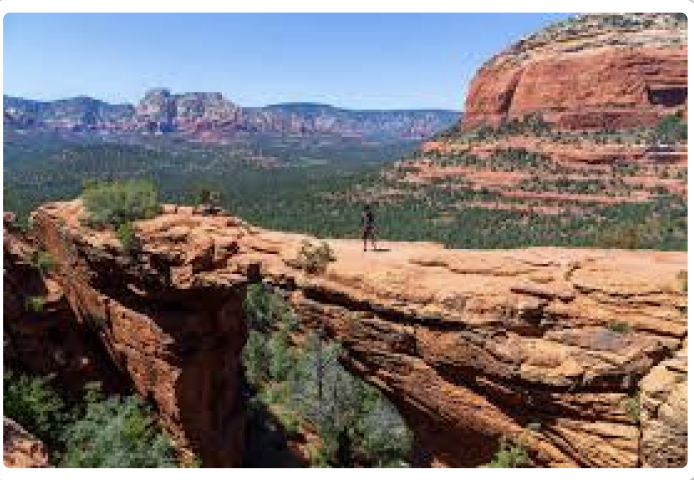
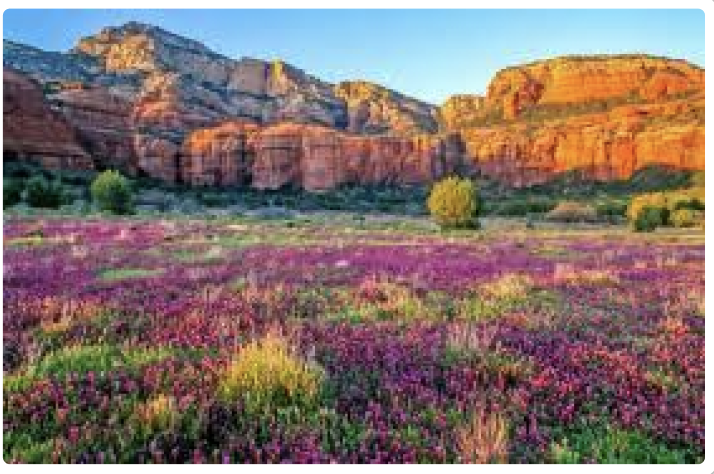

- Sedona is renowned for its stunning red rock formations and desert like landscape
- The town is considered a spiritual vortex site.
- Sedona is a popular destination for hiking and outdoor activities.

- Sedona hosts several art galleries and cultural events.
- The town is known for its vibrant arts community.
- Sedona’s Oak Creek Canyon is a famous natural attraction.

- Sedona’s Chapel of the Holy Cross offers breathtaking views.
- The town attracts spiritual seekers and meditation enthusiasts.
- Sedona is known for its spectacular sunsets and scenic drives.